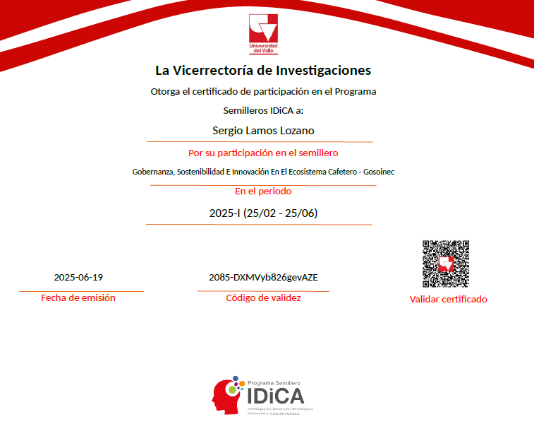
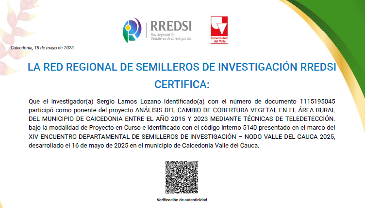
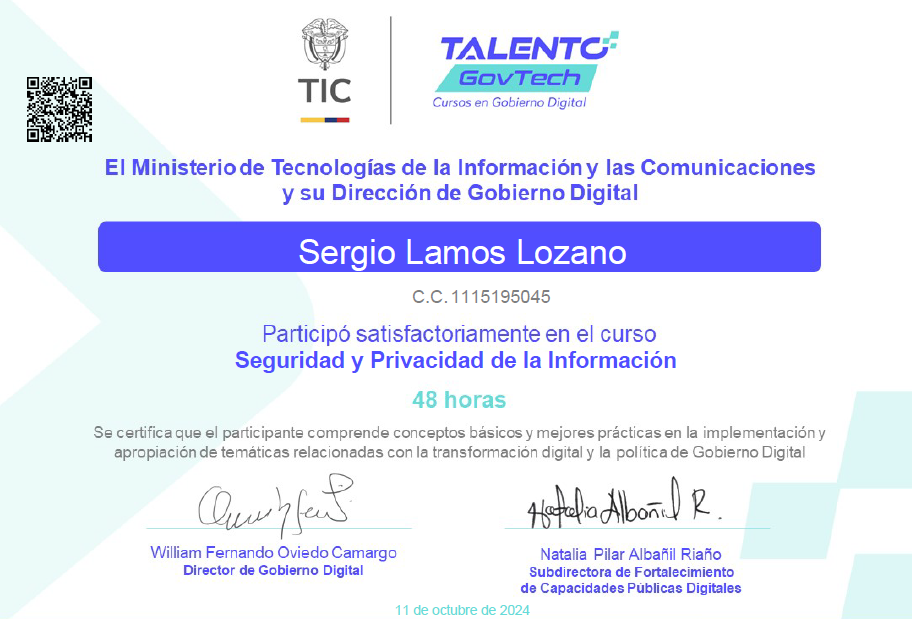
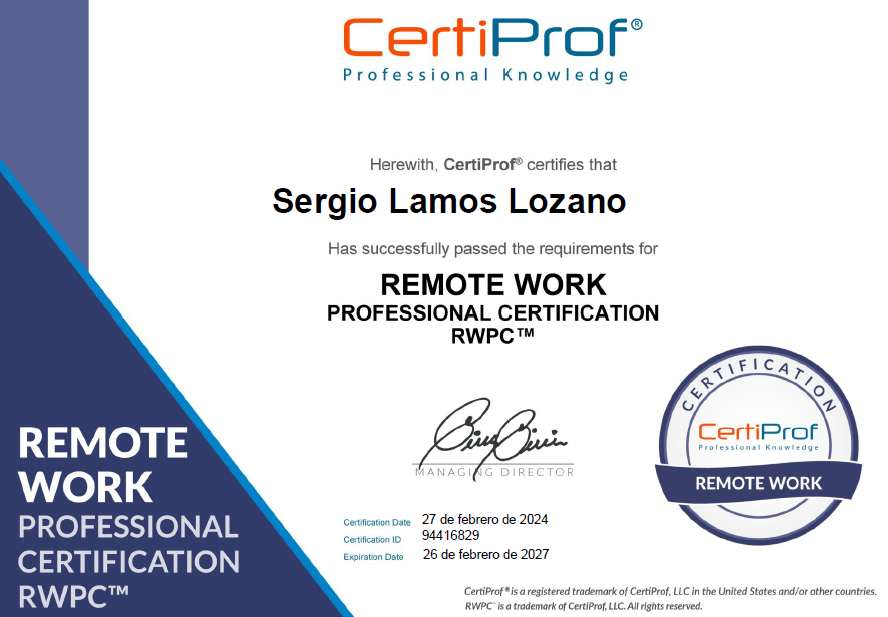

Logros

Participación en el semillero de investigación IDICA
Certificado de participacion como investigador.

Participación en el semillero de investigación IDICA
Certificado de participacion como investigador.

Ponencia de proyecto de investigación
Análisis del cambio de uso de suelo en el área rural del municipio de Caicedonia entre el año 2015 y 2023 Mediante el uso de técnicas de Teledetección.

Ponencia de proyecto de investigación
Análisis del cambio de covertura vegetal en el área rural del municipio de Caicedonia entre el año 2015 y 2023 Mediante el uso de técnicas de Teledetección.

Seguridad y Privacidad de la Información
El participante comprende los conceptos basicos y mejores prácticas en seguridad y privacidad de la información.

Remote Work Professional Certification RWPC
Comprende los principios basicos del trabajo remoto.